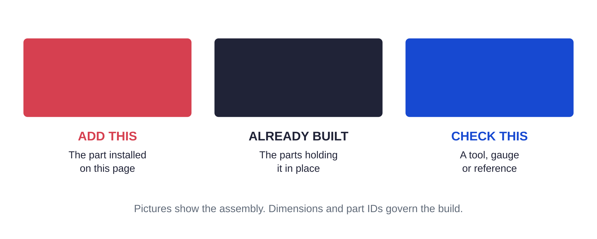

Reference / files179 / 179
Keep the complete build kit together
The PDF, fabrication files, settings, source receipts and firmware form one reproducible package. The named manifests govern their respective interfaces.

| Asset | Location |
|---|---|
| This book / templates | hardware/gun-positioner-guide/gun-positioner-guide.pdf hardware/gun-positioner-guide/gun-positioner-drill-templates.pdf |
| Plan / Prime purchases | hardware/gun-positioner/README.md hardware/gun-positioner/purchases.md |
| Mechanics | hardware/printed-parts/fixtures/gun-positioner/ parts.json · fasteners.json · requirements.json · STEP / STL / DXF |
| Camera fabrication | hardware/printed-parts/fixtures/gun-positioner-observation/ manifest.json · STEP / STL / DXF |
| Fixed controller prints | hardware/gun-positioner/mounting/ manifest.json · STEP / STL · clear-PETG blank, spacers and fan stand |
| Electrical / qualification | hardware/gun-positioner/wiring-manifest.json control.md · commissioning.md |
| Controller images / host | firmware/src_gun_positioner/assets/ · host/ gun-positioner-bench.uf2 · gun-positioner-loaded-development.uf2 |
| Native observation | tools/gun-positioner-observation/ capture helper · record schema · local response fit / proposals |
| Source verification | hardware/gun-positioner-guide/source-receipt.json CAD scene source hashes and final PDF digest |
Ready when
All named assets and source receipts are present in the downloaded kit; part IDs agree across the guide and fabrication manifests. A missing or mixed-revision file fails build preparation. Obtain the matching complete kit before drilling or powering that interface.